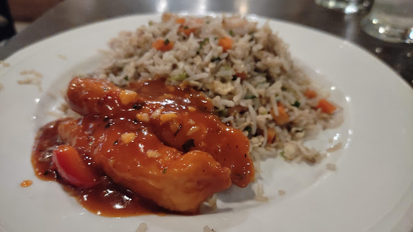
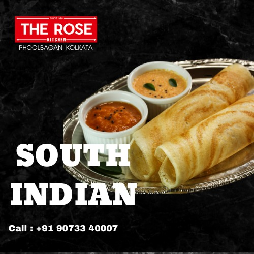
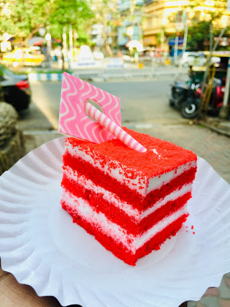

Our Specialties
The Rose is renowned for its exceptional specialties that set us apart. Our signature desserts are a highlight, featuring intricate pastries, decadent cakes, and artisanal confections that are as visually stunning as they are delicious. On the savory side, our multicuisine menu offers a range of standout dishes, from perfectly seasoned international classics to innovative creations that showcase the best of global flavors.

Indian

Chinese

South Indian

Cakes
skinless chicken breasts / fresh cilantro leaves / teaspoon cayenne pepper